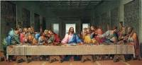
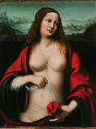
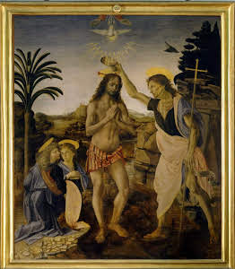
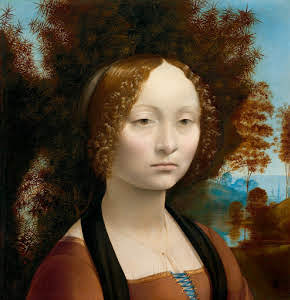

La Mona Lisa

Leonardo Da Vinci fue un polímata italiano del siglo XV y XVI (nació el 15 de abril de 1452 y murió el 2 de mayo de 1519) conocido principalmente por su destacado talento como pintor, ingeniero e inventor.
Sus obras pictóricas más conocidas son La Gioconda (también conocido como La Mona Lisa) y La última cena (ver imágenes en el punto 2). Además de estas dos obras de arte, escribió un sinfín de ideas revolucionarias (recogidas en 20 volúmenes) que no pudieron ser desarrolladas hasta varios siglos después, algunas por las limitaciones técnicas existentes en esa época y otras por pequeñas incongruencias en sus bocetos que imposibilitaba el funcionamiento de sus inventos.
La Mona Lisa |
La última cena |
María Magdalena |
Bautismo de Cristo |
Retrato de Ginebra de Benci |